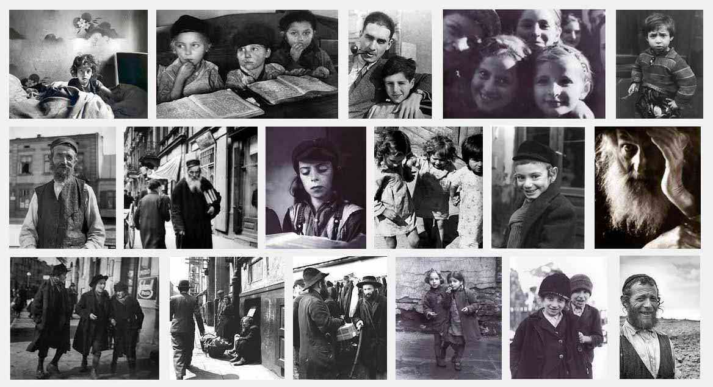

ОБРАТИ нас и МЫ ОБРАТИМСЯ!
Рассматриваю старые семейные фото людей, которых не знаю ни имен, ни где и когда они жили. Смотрю на них внимательно, как рассматривают своих близких родственников в толстом семейном альбоме с бархатными корочками и рельефной табличкой.
15 Боже сил! обратись же, призри с неба, и воззри, и посети виноград сей;
16 охрани то, что насадила десница Твоя, и отрасли, которые Ты укрепил Себе.
15 אֱלֹהִים צְבָאוֹת שׁוּב־נָא הַבֵּט מִשָּׁמַיִם וּרְאֵה וּפְקֹד גֶּפֶן זֹאת׃
16 וְכַנָּה אֲשֶׁר־נָטְעָה יְמִינֶךָ וְעַל־בֵּן אִמַּצְתָּה לָּךְ׃
В клипе использованы музыкальные интерпретации к недельным главам Торы израильского композитора Даниэля Круглова.
***
Сердце сжимается от мысли о судьбе многих из этих родичей моих, погибших, пропавших, не увидевших милости Божьей в ответ на вековую мечту и молитву "ба шана а-ба бирушалаим".
Вот он Израиль, не смотря на все попытки стереть его с карты. Вот он - дом, обещанный Всевышним отцам нашим и нам! И, хотя радость наша сегодня немного смешана с печалью, радость наша велика и благодарение Богу, Он не оставил Свой народ.
***
Роман Вишняк (1897 — 1990)
Роман Соломонович Вишняк (фотограф):
«Я не смог спасти мой народ, я смог спасти лишь воспоминание о нем. Спрятанный фотоаппарат для съемки народа, который не хотел, чтобы его снимали, может вам показаться странным. Было ли это безумием без конца переходить границы, рискуя каждый раз жизнью Каков бы ни был вопрос — ответ всегда один и тот же нужно было это делать. Я чувствовал, что мир будет охвачен безумной тенью нацизма и это приведет к уничтожению народа, что не окажется ни одного свидетеля, который бы смог напомнить о мучениях. Я знал, что должен сделать так, чтобы этот исчезающий мир не был стерт полностью».

Обрати нас к Тебе, Господи, и мы обратимся; обнови дни наши, как древле.
הֲשִׁיבֵנוּ יְהוָה אֵלֶיךָ וְנָשׁוּבָה חַדֵּשׁ יָמֵינוּ כְּקֶדֶם׃
ХАШИВЕЙНУ АДОНАЙ ЭЛЕЙХА ВЕ-НАШУВА. ХАДЕШ ЯМЕЙНУ КЕ-КЕДЕМПлач. 5:21